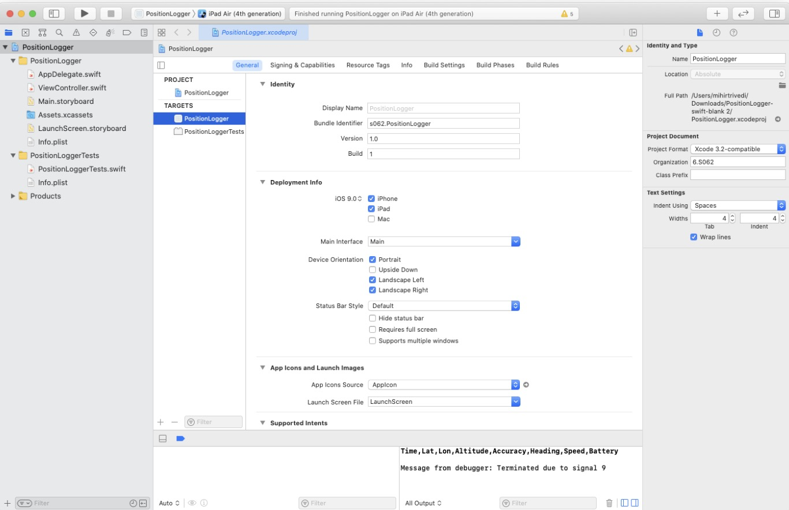

The PositionLogger app allows you to log position data at different accuracies, using different
positioning technologies, including WiFi, Cellular, and GPS.
We've provided most of the code for the PostitionLogger App, including a simple UI for choosing a desired
accuracy, as well as an interface to email a log file of recorded positions out of the app. The main UI
of the PostionLogger is shown below:
Your job is to implement the calls to the iOS CoreLocation API to request location updates at the desired
accuracy, and then compare the accuracy and power drain of the different approaches.
Unzip it. This will create a directory called "PositionLogger-swift-blank", containing an XCode project.
Open PositionLogger.xcodeproj in XCode on a Mac.
Important: If you are testing on an iPad, go to PositionLogger > General > check
iPad (under “Deployment Info”)
Compile and run the app, either on your device or in the simulator (use the appropriate simulator.) It
should show a screen like what you see above. Clicking on the Start button should cause it to enter a
recording state, but it won't actually be writing location data until you add the code to record
location. Note that you may have to update "Team" to your own account (General Tab -> Signing in
Xcode 10 or "Signing and Capabilities" Tab -> Signing in Xcode 11). Update the Bundle Identifier if
needed.

Make sure “iPad” is checked if you are simulating and uploading to an iPad.
iOS Location Primer
The primary way that location is accessed on iOS use though the CoreLocation class
CLLocationManager. Using this class you can request location updates at a certain accuracy, and also
configure the accuracy with which data is created.
In the PositionLogger app, the main screen is an instance of a ViewController object (as specified in
ViewController.swift.) iOS creates one instance of the ViewController class for us when the application is
initialized, because the Main.storyboard file, which we chose as the main storyboard for the app in the
Info.plist file, specifies that the initial view for the app should be an instance of ViewController.
In the viewDidLoad method of ViewController.swift, we've already created an instance of a CLLocationManager
object for you to use and initialized some of the relevant properties of it. These are the lines at the
beginning of the viewDidLoad method:
You can read about the details of the methods in the CLLocationManager documentation, but the gist of this
code is that we are requesting that:
Lines 2 & 3: Location updates be delivered all the time, even when the app is in the background (we have
also added an entry to the "Required Background Modes" dictionary of the Info.plist file in the project to
allow this to work).
Line 4: The LocationManager will call methods indicating the arrival of new data on our class (we are the
"delegate" of the LocationManager).
Line 5: We want location updates whenever they are available (no matter how little the phone has moved).
Line 6: We want iOS to deliver location updates to us immediately, not batch them together.
Note that the settings in line 5 & 6 may have negative implications on the battery life of the device,
but they will allow us to get the highest fidelity data for this lab.
Task 1 - Capture Location Data
The goal of this first task is to log location data to a file and perform some simple analysis of the data.
To acquire the log, you will need to modify the PositionLogger app to start capturing location samples when
the "Start" button is tapped. Open the ViewController.swift file. We have implemented most of this class for
you -- scroll down and find the hitRecordStopButton method:
This method calls startRecordingLocationWithAccuracy or stopRecordingLocationWithAccuracy as appropriate. You
need to implement the body of these methods.
1.1 Implement startRecordingLocationWithAccuracy
startRecordingLocationWithAccuracy should set the desiredAccuracy property of the CLLocationManager object to
the appropriate accuracy based on the supplied value of the acc argument. Note that iOS does not explicitly
allow an application to request GPS, WiFi, or Cellular positioning -- instead it provides the following
constants to choose from:
stopRecordingLocationWithAccuracy just needs to call stopUpdatingLocation on the CLLocationManager object.
(It's OK to call this function on the CLLocationManager even if it is already stopped.)
The next step is to implement code to log position updates as they arrive. We've already set up the instance
of ViewController.swift as the delegate of the CLLocationManager object. This means that it will call the
didUpdateLocations method on ViewController.swift when a location update is available. You need to implement
this method. Its signature is as follows:
Your implementation of didUpdateLocations should iterate through the locations and log them to the file.
We've provided a method logLineToDataFile that logs a String to the log file (which you can then email to
yourself using the email button.)
In the later part of this lab, you're going to visualize and analyze this data, so you'll need to at minimum
log the reading's timestamp, latitude, longitude, and horizontal accuracy, along with the battery level of
the device. To get the current battery level you can call:
UIDevice.current.batteryLevel
We'd also suggest logging the course (bearing) and speed attributes from the supplied CLLocation objects. For
time, we suggest just converting the timestamp (NSDate) object in each CLLocation to a Unix time stamp:
location.timestamp.timeIntervalSince1970
Note that we currently write a header at the start of the log file in the viewDidLoad method:
We've implemented the rest of the application to allow you to capture data from it and email data to
yourself. Verify that it works by attempting to log some data with GPS accuracy on your phone and email it
to yourself (note that location updates can be simulated in the simulator, but that the simulator does not
support the email interface properly).
To make sure that the app always has access to location information (especially in iOS 13), go to
Settings -> Privacy -> Location Services -> PositionLogger -> select "Always".
In the rest of this part of the lab you'll collect some data outdoors and compare the different location
methods, looking at accuracy and power of the different techniques.
There are no deliverables for this task.
How to download your app to your phone?
Connect your phone with your mac and then check this link.
How to trust developer?
Connect your phone with your mac and then check this link.
Task 2 - Compare the Accuracy of the Location Methods
In this exercise, you will walk from the corner of Vassar and Main to the corner of Vassar and Mass Ave three
times. For each walk, you'll run the app at a different location accuracy, and compare the difference in the
overall estimated distance and plot the points on a map.
See this map for the route you will walk: google map
According to Google, the length of this route is 0.2 miles (321.869 meters).
Specifically, for each of the three accuracy settings:
Start at one end of the route
If you have other apps on the phone, we suggest disabling location services for any that are currently
using location services, in Settings -> Privacy. This is important because other apps using location
services can cause your app to receive a finer granularity of location data that you requested.
Open the app, set to the desired accuracy setting, and start recording
Walk the route (you can close the app or leave it open)
At the end of the route, stop recording, and email yourself the log file.
Clear the log
Once you have the three log files, your task is to compute the "connect the dots" distance for each path, and
to plot each path on a map.
The "connect the dots" distance of a path is just the sum of the distances between every consecutive point.
Each point is a latitude/longitude pair, which represents a point on the surface of the earth. For points
that are close together, Euclidian distance is a close approximation of the actual distance, but for points
that are far apart, a straight line can be quite far from the true distance between these points, which
follows an arc on the surface of the Earth. The typical way to estimate this distance is to assume the Earth
is a sphere (it isn't exactly spherical but pretty close), and to use the haversine formula to compute the
distance between the two points:
where the two points are \((\text{lat}_1, \text{lon}_1)\) and \((\text{lat}_2, \text{lon}_2)\) and \(r\)
is the Earth's radius (6371 km). Be sure to convert lat/lon to radians (multiply by \(\pi\) and divide by 180.0) before using built-in trigonometric functions
(see https://en.wikipedia.org/wiki/Haversine_formula).
For each of the three logs, compute the "connect the dots" distance between all points in the trace using the
haversine formula. How does it compare to the measure .306 miles (492.5 meters)?
In addition, plot each of the three files on a map. We've provided a script, csv2kml.py, that will convert a csv file with a header line that includes
"Lat" and "Lon" fields into a KML file that you can view on Google Earth or import into Google My Maps (https://mapsengine.google.com/map/). If you'd
prefer, you may visualize these files using some other method than Google Maps / Google Earth.
The deliverables for this task are the connect-the-dots distance you computed for the three different walks,
as well as a plot of each of the three walks you did on a map.
Task 3 - Compare the Battery Drain of the Location Methods
For this task, you will compare the battery drain of the cellular and GPS location accuracy settings. To do
this, you'll need to start logging and let the app run for several hours (4 hours should be long enough),
and then compare the battery level and the rate of drain while the app runs.
For the cellular and GPS settings
Fully charge the phone
If you have other apps on the phone, we suggest disabling location services for any that are currently
using location services, in Settings -> Privacy. Also, enable Low Power Mode in Settings ->
Battery.
Open the app, set to the desired accuracy setting, and start recording
Turn off the screen and do not use the phone for 4 hours. The app will continue to record in the
background.
Stop recording and email yourself the file.
Clear the log.
Once you have the two log files, make a plot of the battery level of each over time, by using the time and
battery level fields in the file. You can make your plot which whichever tool you like: Google Charts,
Excel, pyplot, etc.
The deliverable for this task is the graph of the battery drain of the two different location methods. Note
that if you don't have cellular service on the phone, running with cellular accuracy may produce results
different than you expect!
Submission Instructions
Write up your answers to the following items in a single PDF file and name it
lab1_${pennkey}.pdf or lab1_${pennky}+${pennkey}.pdf (e.g. lab1_bnagda.pdf
or lab1_mihirt+bnagda.pdf). If you work with a partner, you only have to submit once. You can get a checkoff
during Office Hours within a week after the submission deadline. You do not need to submit your code, but we
may ask to look at your code during the checkoff.
Names and Penn emails (including your lab partner, if available)
Accuracy levels for GPS, WiFi, and Cellular (e.g. kCLLocationAccuracyBest) (Three answers)
Estimated distances in meters for the three methods from Task 2 (Three answers)
Maps of the points/trajectories for three methods (screenshot(s))
Plots of the battery drain for Task 3 (cellular and GPS)
Estimated number of hours you spent coding for Section 1
Estimated number of hours you spent collecting/analyzing data for Section 1
Any comments/suggestions for the lab? Any questions you may have for the checkoff? (Optional)
During the checkoff, we may ask you to show a demonstration of an Application, show the experiments' results,
or explain if and why the results are as expected (or unexpected).